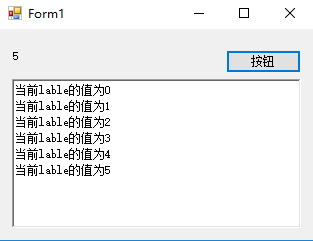
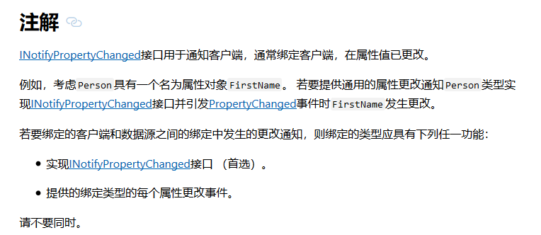
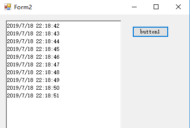

在我们做工业软件中,经常会遇到要实时监控某一点,在这个点变化时去做一些事情
放入程序里呢,就是要实时监控某一属性的值,当值发生变化时触发事件,其核心就是借助属性的Set方法,来判断当前set的值是否与原来的值相等,如果相等直接赋值不予理会,如果不相等,说明值变了,根据自己调用的方法,声明委托,事件,触发方法
核心代码:
public delegate void tempChange(object sender,EventArgs e);
public event tempChange onTempChange;
private string _temp;
public string Temp
{
get { return _temp; }
set
{
if (_temp!=value &&_temp !=null)
{
onTempChange(new object(), new EventArgs());
}
_temp= value;
}
} 下边我们做一个Demo ,来测试一下
我们新建一个from,上边添加一个lable,添加一个button 我们通过button来改变这个temp属性的值 ,使之触发对应的事件
using System;
using System.Collections.Generic;
using System.ComponentModel;
using System.Data;
using System.Drawing;
using System.Linq;
using System.Text;
using System.Threading.Tasks;
using System.Windows.Forms;
namespace WindowsFormsApplication3
{
public partial class Form1 : Form
{
public Form1()
{
InitializeComponent();
}
int i = 0;
private void Form1_Load(object sender, EventArgs e)
{
changeEvent += Form1_changeEvent;
}
void Form1_changeEvent(string value)
{
this.richTextBox1.Invoke(new Action(() => { this.richTextBox1.AppendText("当前lable的值为" + value+"\r\n"); }));
}
private void button1_Click(object sender, EventArgs e)
{
Temp = i + "";
label1.Text = Temp;
i++;
}
public delegate void ChangeDelegate(string value);
public event ChangeDelegate changeEvent;
public string _temp;
public string Temp
{
get { return _temp; }
set
{
if (_temp != value)
{
changeEvent(value);
}
_temp = value;
}
}
}
}测试:

可以看到 我们每点击一次按钮 都改变了temp的值,从而触发了changeEvent事件 ------给richTextBox添加文本
===================================================================================================
分割线
===================================================================================================
郑重声明:感谢id为 特别 的前辈提醒
其实微软给我们提供了INotifyPropertyChanged接口用于通知客户端，通常绑定客户端，在属性值已更改。

微软提供了如何：实现 INotifyPropertyChanged 接口 的文档,各位看官如有兴趣可以先去看一下官方的文档,毕竟我写的肯定简陋
接下来我根据文档自己写一个Demo测试一下
还是和上边一样我们新建一个from,上边添加一个lable,添加一个button 我们通过button来改变这个temp属性的值 ,使之触发对应的事件
using System;
using System.Collections.Generic;
using System.ComponentModel;
using System.Data;
using System.Drawing;
using System.Linq;
using System.Runtime.CompilerServices;
using System.Text;
using System.Threading.Tasks;
using System.Windows.Forms;
namespace WindowsFormsApplication3
{
public partial class Form2 : Form
{
public Form2()
{
InitializeComponent();
}
Demo demo = new Demo();
private void Form2_Load(object sender, EventArgs e)
{
//给changed事件注册方法
demo.PropertyChanged += demo_PropertyChanged;
}
void demo_PropertyChanged(object sender, PropertyChangedEventArgs e)
{
SetMsg(e.PropertyName);
}
private void button1_Click(object sender, EventArgs e)
{
//通过点击事件,将当前时间的值赋给Temp 从而触发属性改变事件
demo.Temp = DateTime.Now.ToString();
}
private void SetMsg(string msg)
{
//向richTextBox中添加文本
this.richTextBox1.Invoke(new Action(() => {this.richTextBox1.AppendText(msg+"\r\n"); }));
}
}
public class Demo : INotifyPropertyChanged
{
//实现INotifyPropertyChanged
public event PropertyChangedEventHandler PropertyChanged;
//此方法由每个属性的Set访问者调用。
//应用于可选propertyName的CallerMemberName属性
//参数导致调用者的属性名称被替换为参数。
private void PropChanged([CallerMemberName] String propertyName = "")
{
if (PropertyChanged != null)
{
PropertyChanged(this, new PropertyChangedEventArgs(propertyName));
}
}
//定义属性
private string _temp;
public string Temp
{
get { return _temp; }
set
{
if (this._temp != value)
{
PropChanged(value);
this._temp = value;
}
}
}
}
}测试结果:

测试完成